Unclear actions
Several elements competed for attention, making it difficult for children to identify what to do next.
02 / UX RESEARCH & INTERACTION DESIGN
Helping children find their way through playful, intuitive navigation.
Helping children explore independently, one interaction at a time.
In collaboration with Vilke, we designed an interactive experience to help children aged 5–10 navigate more confidently.
The project explored how playful interaction, clear visual cues and predictable navigation could support learning and independence.
We also considered the needs of parents and teachers, who wanted children to feel safe and capable of using the product without constant assistance.
Children did not always understand how to move through the experience. Competing actions, unclear navigation and too many decisions before play created confusion and interrupted exploration.
Several elements competed for attention, making it difficult for children to identify what to do next.
Children sometimes struggled to recover after reaching an unexpected screen and needed adult assistance.
The initial experience presented too many decisions and lacked a clear, motivating starting point.
Make navigation understandable through interaction, not instructions.
The project highlighted how children interact differently from adults. Clear actions, immediate responses and consistent navigation were important for supporting independent use.
Three insights that shaped the design direction.
When multiple elements demanded attention, children struggled to identify the next step and tapped without a clear direction.
Children often explored by tapping before reading. They needed immediate feedback and a familiar way to return to the starting point.
The steps before starting an activity created friction. A shorter, guided setup could make the experience more inviting.
The original interface presented main choices through a text-based menu and organised activities in a list.
We saw an opportunity to make the experience more visual, playful and easier for children to understand.
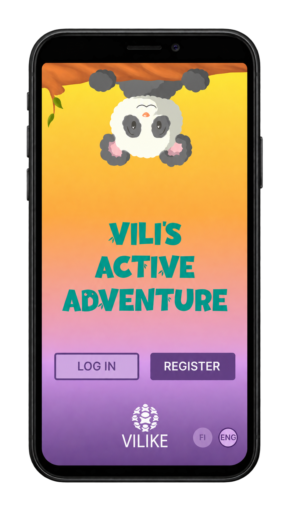
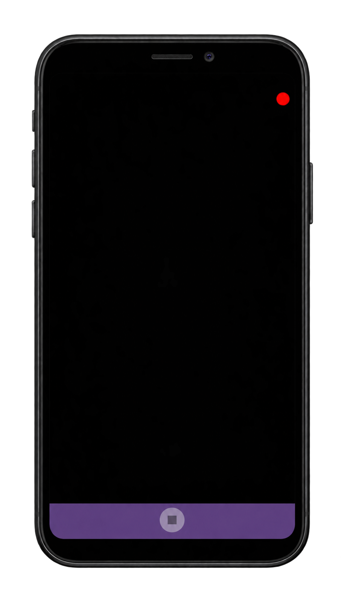
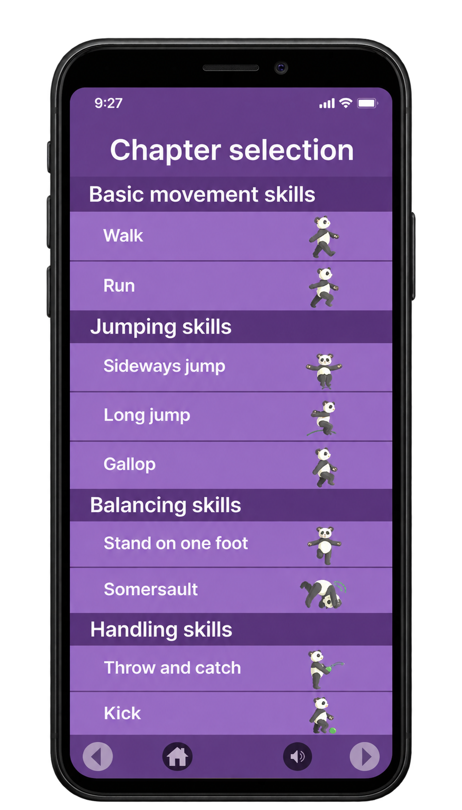
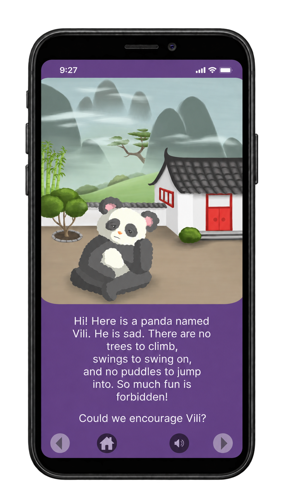
We explored the navigation structure through wireframes, focusing on clear actions, consistent controls and a predictable flow before play.
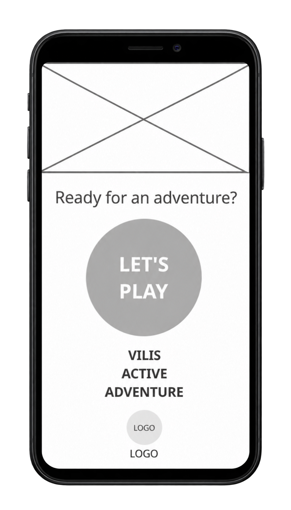
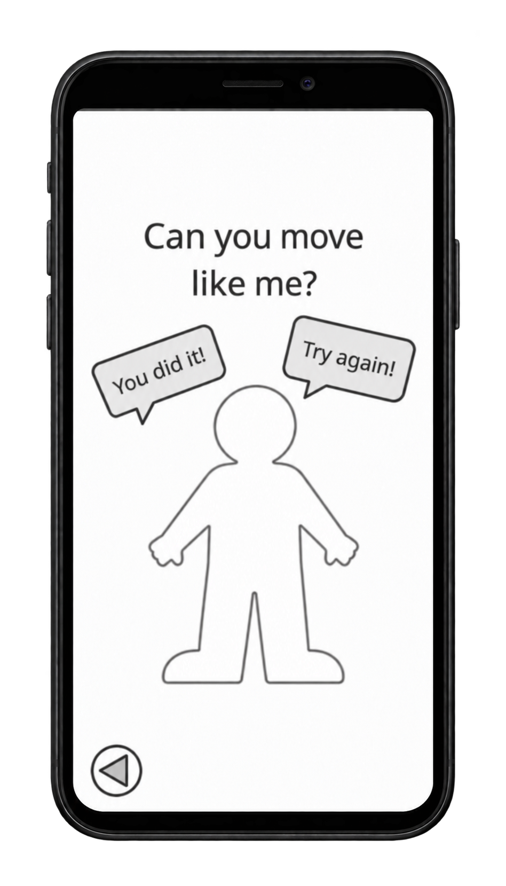
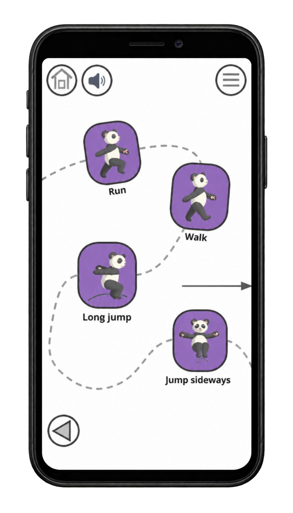
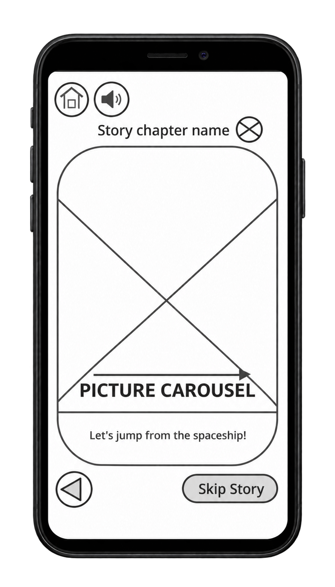
The redesigned experience introduces a prominent “Let's Play!” button, character-based profile selection and a clearer way to start or continue an adventure.
A playful visual path replaces the activity list, while larger illustrations and shorter instructions make each step easier to understand.
Home, sound and menu controls remain in consistent positions throughout the main screens.
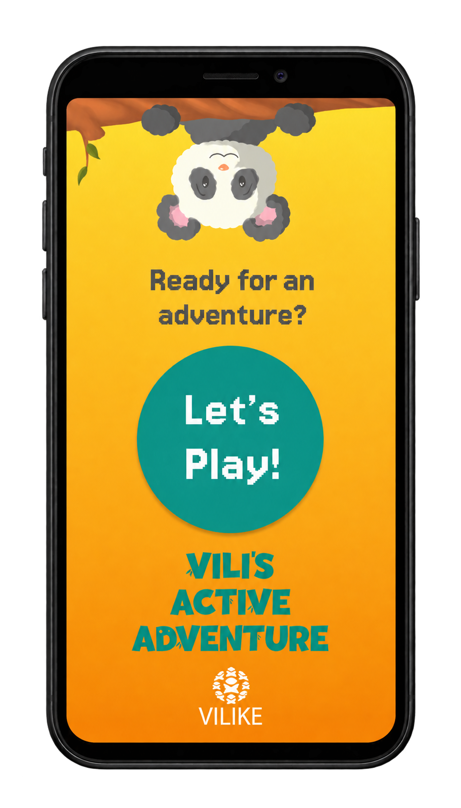
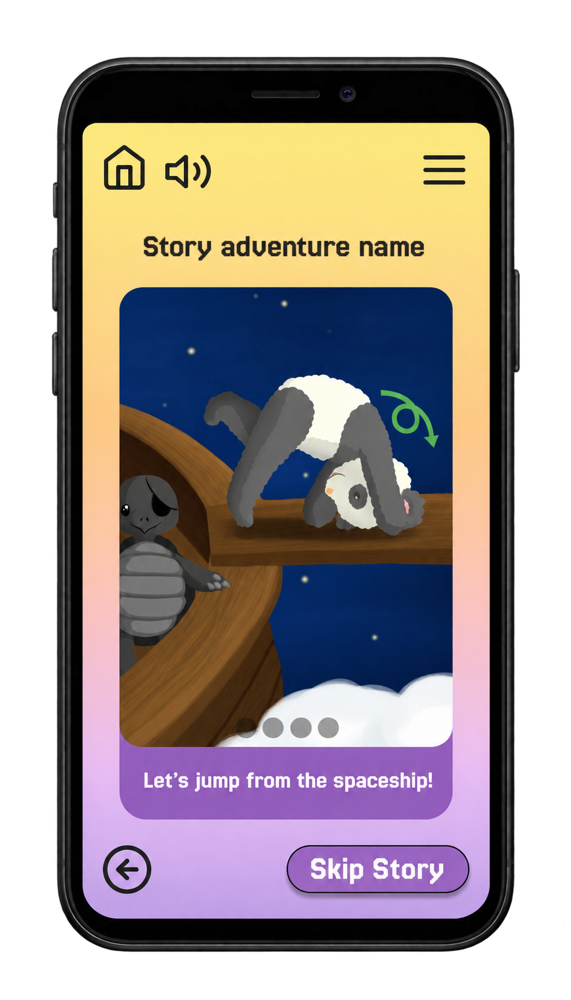
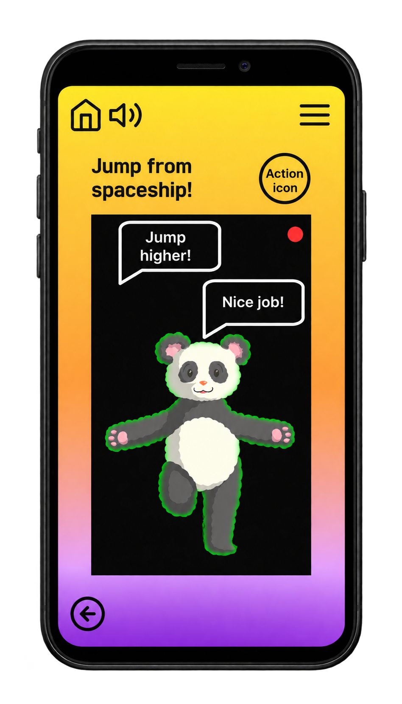

I conducted usability testing with children aged 5–10, using tasks such as finding content, starting play and returning to the home screen.
Short validation sessions with parents and teachers also helped assess whether the experience felt understandable and appropriate for independent use.
I observed task completion, hesitation, requests for help and the time it took to identify the correct action. The findings guided refinements to icons, navigation and the steps before play.
Reaching an unexpected screen sometimes interrupted exploration and increased reliance on adults.
Consistent navigation controls and a familiar home screen gave children a clearer way to recover and continue.
A more playful experience built around independence.
The redesign brings clearer visual priorities, more predictable navigation and a more inviting introduction to activities.
Usability testing informed refinements to feedback, icon design and screen pacing, with the goal of helping children explore with less confusion.
The intended benefits include fewer interruptions, greater independence and a more reassuring experience for parents and teachers. Further evaluation would be needed to measure these outcomes.
Designing for children means making the next step visible.
This project taught me how important clear visual hierarchy, immediate feedback and predictable navigation are when designing for young users.
It also reinforced that the experience before play is part of the product. A good introduction should guide children forward without overwhelming them with choices.